数据非依赖性采集 (DIA)1,2 是一种用于大型靶向蛋白质组学实验的先进技术。在没有采集预定的情况下，选择反应监测 (SRM) 和平行反应监测 (PRM) 等靶向采集方法仅能测量少量肽段；在每次质谱运行进行预定的情况下，这些采集方法可测量数十到数百个肽段。而使用 DIA 时可以测量更多的肽段（数千个乃至整个蛋白质组），相对于 SRM，采用这种方法时在灵敏度、选择性和再现性方面的牺牲并不大。DIA 的另一个优点是无需预先指定或预定所要测量的肽段，而是可以在运行 DIA 进行采集后，提取广泛的母离子质荷比范围内任何所需肽段的子离子色谱图。
自 2010 年 10 月 Skyline 首次支持根据 DIA 数据提取色谱图以来，这项支持一直在定期改进。从 21.1 版开始，Skyline 支持多种常用的 DIA 数据分析策略和工作流程。Skyline 还支持所有具备 DIA 功能的仪器，其中包括 SCIEX、Agilent、Bruker 和 Waters 公司的 Q-TOF 仪器以及 Thermo 公司的 Q-Orbitrap 仪器。
采用一种有效的 DIA 工作流程时，一开始就能在特定的仪器和色谱设置下运行任意多次初步数据依赖性采集 (DDA)。它有利于在运行 DIA 的同一台仪器上执行这些初步 Shotgun 测量。但是，如果使用类似的分段技术和色谱法，也可以在仪器平台之间转移靶向分析。对于这些初步的 DDA 测量，为达到更高的蛋白质组覆盖率，样品可能会被分馏或以其他方式简化。DDA 运行使用肽段谱图匹配管道进行处理，然后（在 Skyline 中）利用得到的肽段 ID 的谱图和保留时间来创建谱图库和保留时间 (iRT) 库，或是（在其他工具中）创建叫做“分析库”的扩展离子对列表（具备碎片离子子集的相似信息）。这些碎片离子相对丰度和归一化保留时间 (iRT) 库可用于后续任意多次使用相同仪器和标准肽段进行保留时间校准的 DIA 运行。
尽管有多种方法可将 DDA 搜索结果转换为适合该库 DIA 分析方法的库（在 第 2 场 Skyline 教程网络研讨会中描述为“先验知识工作流程”，此后在第 14、15 和 18 场网络研讨会以及 DIA/SWATH 数据分析教程中都有更详尽的记录），但开始 DIA 分析的一种简单易行的方法是在同一仪器上穿插 DDA 运行和 DIA 运行，将 DDA 结果的谱图和保留时间作为对 DIA 运行的预测。
在本教程中，您将学习如何使用简单的 DDA/DIA 穿插方法在 Skyline 中设置、导入和处理 DIA 运行。如果您要在研究中使用 DIA，强烈建议您继续使用上面所列网络研讨会和教程中阐述的更强大、更复杂的方法。
要开始本教程，请下载下列 ZIP 文件：
https://skyline.ms/tutorials/DIA-20_2.zip
请注意，这个文件非常大（下载大小为 4.5 GB，未压缩的大小为 6.0 GB），因为该文件包含 DIA 运行，而 DIA 运行文件一般非常大，通常比 SRM 运行文件大 100 到 200 倍。如果下载耗时太长或您的可用磁盘空间不足，也可以下载此处的精简版（下载大小为 660 MB，未压缩大小为 918 MB）教程：
https://skyline.ms/tutorials/DIALibrary-20_2.zip
如果选择不含质谱原始数据文件的精简版，您需要跳过教程中的一些步骤，下文将会注明。无论您选择哪个 ZIP 文件，下一步都是将其中的文件解压缩到您计算机上的某个文件夹，例如：
C:\Users\damodei\Documents
该操作将创建一个新文件夹：
C:\Users\damodei\Documents\DIA-20_2
如果您在开始学习本教程之前就一直在用 Skyline，最好将 Skyline 恢复为默认设置。要恢复默认设置：

该 Skyline 实例中的文档设置现已重置为默认值。
由于本教程涵盖蛋白质组学主题，因此您可以执行以下操作来选择蛋白质组学界面：

Skyline 将在蛋白质组学模式下运行，Skyline 窗口的右上角  随之显示蛋白质图标。
随之显示蛋白质图标。
对于 DIA 分析，您需要强制 Skyline 对提取的所有定量离子对的峰面积进行积分。要执行此操作：
您应当会看到 Skyline 中出现仅采用默认设置的新空白文档。为了说明在 Skyline 中分析 DIA 数据的整个过程，要从头开始建立适合于 DIA 分析的 Skyline 文档，填写必要的设置、离子对、谱图库和保留时间信息。
如果采用 DIA 和穿插的 DDA 工作流程进行实验，首先要为 DIA 和 DDA 运行配置仪器，期间只需非常笼统地考虑您可能感兴趣的肽段目标，比如确保覆盖的母离子质荷比包含目标。虽然 DDA 方法由您决定，但 Skyline 允许您定义“分离方案”（串联质谱片段的母离子分离窗口模式）来设置 DIA 方法。即便您已收集 DIA 数据，也要定义所用的分离方案，以便 Skyline 处理 DIA 运行。要为本教程实验定义分离方案，请执行以下步骤：
对于大多数胰蛋白酶肽段，前 3 个同位素峰强度最高。您还可以使用基于基本（最强）同位素峰百分比的强度阈值，但这些设置对于胰蛋白酶肽段而言应是合理的默认值。
| 备注：这些数据在 Q-Exactive 上收集而来，其中 MS1 和 MS2 扫描均使用 Orbitrap 进行。不过，我们发现在质量分析仪指定为“Orbitrap”时，从质心谱图中提取色谱图比使用原始轮廓谱图产生的结果更好。 |
“离子对设置”表单将显示如下：

| 备注：您将保留时间筛选选项保留为仅使用 MS/MS ID [5] 分钟之内的扫描。Skyline 就会明白，它应当只从您库中找到的肽段谱图匹配 5 分钟内采集的 DIA 谱图提取强度。对于单个肽段谱图匹配，总提取窗口将为 10 分钟。如果给定的肽段有多个 ID，Skyline 将从最短 ID 时间减去 5 分钟和最长 ID 时间加上 5 分钟的范围内采集的谱图中进行提取。（所有 ID 保留时间存储在您建的非冗余库中，稍后会看到。）第二个选项是仅使用预测保留 [5] 分钟之内的扫描，其中使用保留时间预测器（例如 SSRCalc 或更常见的 iRT 库）来确定提取时间范围。本教程中虽不会使用 RT 预测器，但它们在前文提到的其它教程和网络研讨会以及导入分析库提示（在 Skyline 网页上的提示 > 使用其它定量工具）中讨论过。 |
您已设置全扫描仪器的基本参数。接下来将指定 DIA 分离方案，或仪器在执行 DIA 时循环使用的母离子质荷比范围模式。例如在本教程的数据集中，Q Exactive 仪器使用循环的母离子质荷比范围从 500 至 520 质荷比 开始，然后是 520 至 540 质荷比，一直到 880 至 900 质荷比（或连续的 20 质荷比窗口，从 500 至 900 质荷比），然后重复这一循环。要在 Skyline 中指定分离方案，请执行以下步骤：
编辑分离方案表单应显示如下：

这将启用从中指定分离窗口的网格。您可以在网格中手动输入窗口边界，但由于本例中窗口边界的循环非常规律（从 500 到 900 质荷比，以 20 质荷比为增量），因此可采取一种更快捷的方法来指定边界：
这样一来，窗口边界将优化到大约 0.25 质荷比，这里可能出现电荷 1 和 2 的肽段母离子。电荷 3 和 4 的一些母离子可能更接近这些边界，但在使用 20 质荷比窗口时，如果 Q1 分离在边界3 处合理有效时，这些窗口应当仍然很少发生，从而减轻了对 SWATH2 原始论文中提出的窗口重叠边缘的需要。

图：从观察到的肽段常见库中发现的带 1-4 个电荷的肽段母离子计算得出的直方图。最高的峰代表电荷 1-4 的母离子，第二高的峰代表电荷 2 和 4 的母离子，较小的峰只代表电荷 3 的母离子，电荷 4 的母离子作为小肩部仅在电荷 3 的峰上可见。标有“Optimal” Boundary的垂直线表示此范围内的优化窗口布局边界。（由 Brian Searle 提供）
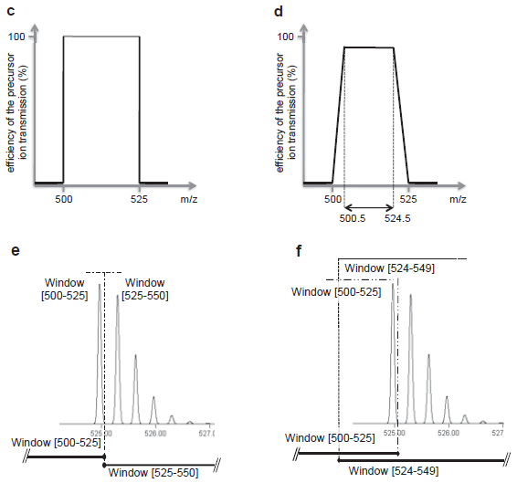
来自 Gillet 等人的补充图 S1。MCP 2012：c) 显示所定义范围的完美矩形分离，d) 显示在定义的四极分离范围边缘超过 0.5 质荷比的信号衰减不太理想，e 和 f) 显示完整的同位素分布如何在带有和没有重叠边缘的窗口之间分割。务必记住，虽只针对单同位素质荷比，但整个同位素分布均被分离，因此即便单同位素母离子质荷比看似很接近分离窗口的边缘，但也可以获得很强的碎片离子信号。
如果您在使用的 DIA 数据已经被采集，此时定义的分离方案就必须反映采集时使用的仪器设置。在这种情况下，完全可以单击导入按钮，将某个现有数据文件导入 Skyline。
计算分离方案表单应显示如下：

Skyline 将自动填充覆盖 500 至 900 质荷比（间隔为 20 质荷比）所需要的 20 个窗口的边界。
编辑分离方案表单应显示如下：

在 Skyline 中还可以直观地看到母离子质荷比范围内随时间变化的分离情况，用于检查您所输入的信息是否正确。
您应当看到分离窗口的周期随时间推移而变化的图形，其中 Y 轴表示周期/时间，X 轴表示质荷比：

请注意，在 DIA 中，仪器不需要一组特定的离子对 (SRM) 或母离子 (PRM) 来进行测量，因此即便目标仍然为空，但您的文件现在已具备设置 DIA 运行所需的一切信息。DIA 分离方案可按以下方式导出到仪器。
随即出现导出分离列表，从中可以选择分离列表的导出格式。
该表单应显示如下：

打开您保存的文件。该文件显示如下：
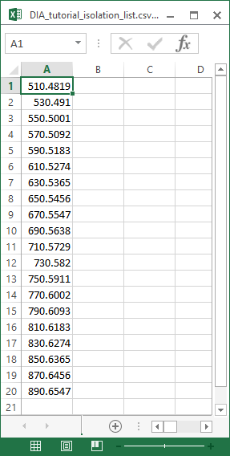
这个分离方案的格式针对的是 Thermo Q Exactive（本教程中的数据采集自该仪器），但 Skyline 也可以将其导出到其它几种仪器。
如果这是真正的 DIA 实验，您将使用此分离列表文件来在仪器上运行 DIA 采集。另外，也可以简单地在仪器软件中手动指定分离方案。数据采集的其它方法参数（例如串联质谱分离宽度和分辨率）需要在方法文件中手动设置。
假设您实验的所有 DDA 和 DIA 运行现已全部完成，如本教程中所述，您将开始数据分析工作流程，通过使用X! Tandem 等搜索引擎将 DDA 运行的串联质谱谱图与肽段进行匹配，生成一系列 .xtan.xml 文件；如果您运行的是 Peptide Prophet 和 Trans Proteomic Pipeline (TPP)，则生成 .pep.xml 文件。在本教程中，如果您下载了 DIA-20_2.zip（而不是 DIALibrary-20_2.zip），会为您提供一个用于 DDA 运行的 .pep.xml 文件以及 DDA 原始数据文件的 .mzXML 文件转换 (804 MB)。在配置 Skyline 文档来分析相关 DIA 运行时，第一步就是将这些搜索结果导入 Skyline，创建包含串联质谱谱图和数据采集保留时间的谱图库。要导入 DDA 搜索结果，请执行以下操作：
Skyline 会指示您需要保存当前文档，这样它便能获知要在电脑磁盘中执行分析的位置。
导入肽段搜索向导应显示如下：

对于该数据集，截止得分字段设置为“0.95”表明 PeptideProphet 得分为 0.95 或更高的肽段谱图匹配项将包括在内，因为 DDA 数据采用 TPP 处理（在使用 SEQUEST 进行肽段谱图匹配之后）。对于使用 q 值或预期得分的其它谱图匹配管道，其中 0 表示最好，1 表示最差，截止得分使用 1 – 得分。因此，0.95 意味着 ≤0.05。对于可重用的库，可能要使用更严格的截止得分，如 0.99（即 ≤0.01 或 q 值错误发现率为 1%）。
此文件包含单次 DDA 运行的肽段谱图匹配结果。在真正的实验中，您其实会在质谱仪上执行 DDA 采集，然后通过搜索引擎运行输出文件，以生成一个或多个这样的文件（对于 TPP 生成的 pepXML，通常生成一个文件）。在此会为您提供这些文件。请注意，原始 DDA 运行数据文件（已转换为 mzXML），即 interact-20130311_DDA_Pit01.mzXML，也位于同一文件夹中。虽然无需为色谱图提取而导入该文件，但其必须位于此处，建库器才能查找 .pep.xml 文件中所没有的库串联质谱谱图。Mascot DAT 文件、Proteome Discoverer pdResult 文件以及 X! Tandem 原生 XML 文件等其它谱图匹配管道输出则是在单独一个输出文件中包含需要的一切信息。您可以在 Skyline 网站上找到支持的工具和文件格式的完整列表。
向导中的谱图库页面现在应显示如下：

Skyline 建完谱图库后，所有与串联质谱谱图匹配的肽段及其 DDA 运行的保留时间都可以包含在您的 Skyline 文档中。但首先会显示提取色谱图页面，从中可以告知 Skyline 在哪里找到将用于色谱图提取、峰检测和峰面积计算的 DIA 数据文件。
浏览结果文件表单应显示如下：

导入肽段搜索表单应显示如下：
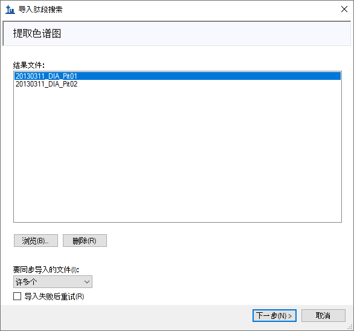
Skyline 会显示一个表单，询问您是否移除相同前缀“20130311_DIA_Pit0”，这样 Skyline 界面中显示的重复测定名称将更短，并且通常更易于使用。但在本例中，名称将缩短为“1”和“2”。
导入结果表单现在应显示如下：
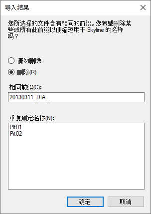
此时将出现添加修饰页面，其中显示谱图库包含 M[+16] 肽段序列，这与 Unimod 的修饰“Oxidation (M)”相匹配。如果想在目标列表中允许这类修饰，可以选中修饰名称旁边的复选框，但在本教程中不要这样做。
随即将前往配置离子对设置页面，如下所示：
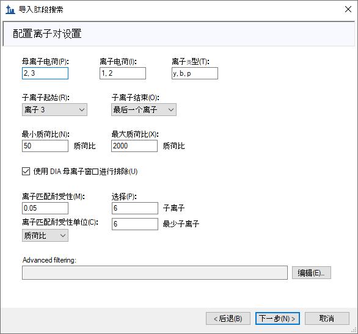
虽然在本教程中可以使用这些默认设置，但日后也可以为自己的数据进行其它设置。
要移至下一页，请执行以下操作：
此时将前往配置全扫描设置页面，其中应显示您早先配置的相同设置，但务必要显示如下：
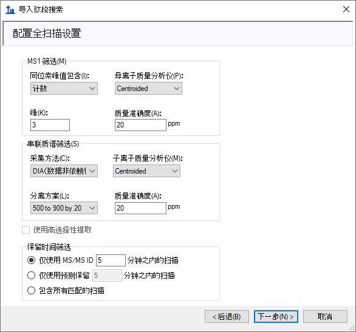
随即进入导入 Fasta页面，其中要求您以 FASTA 格式指定所要针对的蛋白质以及用于将它们消化成肽段的蛋白酶，您可以将其保留为默认胰蛋白酶，且不允许任何遗漏的酶解位点数。
该表单现在应显示如下：

在这个简单的介绍中，您刚刚提供的 FASTA 文本中只有 6 个目标蛋白质，您将不使用诱饵或通过 mProphet 算法生成的动态峰选择模型。有关这些选项的详细信息，请查阅 DIA/SWATH 数据分析教程。
Skyline 将显示一个表单，告知您它将添加 6 个蛋白质和 21 个肽段，涵盖 25 个母离子和 225 个离子对。对于每个蛋白质，此列表仅包含谱图库中存在的肽段。
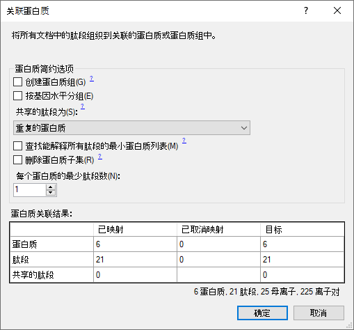
这些蛋白质和肽段应出现在目标窗格中，并且应从您选择的原始数据文件自动开始提取色谱图。您可以移动或关闭进度窗口并继续以下操作：
此时将显示 Skyline 包含的全套离子对。请注意，每个肽段都包含 500 到 900 质荷比之间的所有合格母离子，并且每个母离子都包含 6 个 b 和 y 离子对以及 3 个母离子（M、M+1、M+2）。另请注意，每个母离子都有相应的库谱图。每个离子对的文本都以“排名”或“同位素排名”数字结尾，这些数字表明它在碎片离子库质谱图或母离子同位素离子的同位素分布中的强度排名。
目标视图应显示如下：

在 DIA 中可以提取任意一组子离子，因为该仪器涵盖 500-900 质荷比范围内所有可能的母离子-子离子组合（至少包含测量的串联质谱谱图范围内的那些组合）。但在实践中通常不必提取每个可能的子离子，而且添加有噪声的子离子和所需肽段信号很低的色谱图其实会妨碍肽段检测。您设置的需要 6 个最强离子对（不包括 y1、y2、b1、b2）的子离子选择规则已在蛋白质组学界得到广泛接受。
在大型 DIA 实验中，使用诱饵肽段6来训练高级峰选择（肽段检测）模型可能会有用，此举可以改进 Skyline 自动选择峰的结果并允许 Skyline 生成检测概率得分（q 值）。诱饵肽段对于 DIA 工作流程并无绝对必要，只有在您选择应用自定义峰得分方法时才需要。在许多情况下，Skyline 默认峰选择表现非常好，无需自定义峰得分，即便使用自定义峰得分，也存在诱饵的替代方案（请参阅高级峰选择模型教程）。在本教程中，不会向文档中添加诱饵。
完全导入 DIA 运行后，即可查看结果：
Skyline 窗口应显示如下：
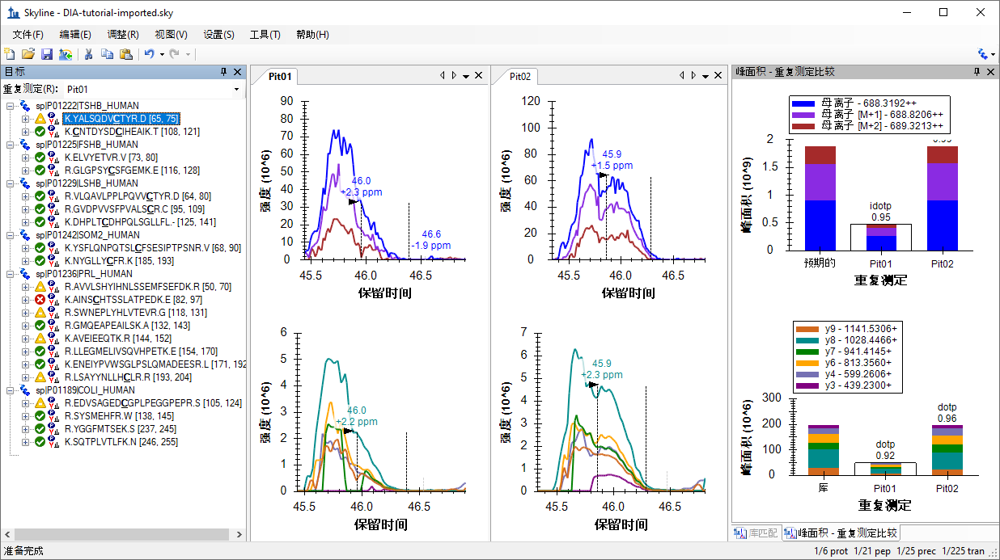
这并非是适合开始的出色示例，因为它看起来比实际情况更糟。我们一眼就能看出峰积分边界需要调整。这可能是因为 Skyline 根据片段色谱图选择积分边界，如果仔细观察，会发现有些地方的信号衰落至 x 轴。在质心数据中，这通常是由于一个峰移到了提取窗口（您之前设定的提取窗口是 +/-20 ppm）外部。
看到这种信号衰落的证据，您就会质疑提取设置是否太窄。在 Skyline 中，检查这个问题的最好方法就是执行以下操作。
在包含更多目标的文档中，可能不必执行第二步来了解质量误差分布，仅使用每个肽段母离子的最强离子对。但在本例中，为了让您更准确地判断分布，现在应当显示如下：

依照经验法则，您应当查看：
根据这些规则，为导入文件中的质谱图选择 15 ppm 或许是个不错的选择。
您会看到均值 (2.9) 和标准偏差 (2.1) 似乎表明 9.2 ppm 已足够。这应当足以让您确信，在所提取色谱图中看到的任何信号衰落均不是由于 20 ppm 质量误差耐受性太窄所致。稍后我们将介绍可能导致出现该异常的原因。
现在先执行以下操作：
最后一步是在谱图库中肽段谱图匹配项的保留时间处添加青色垂直线。这些是您选择提取 +/- 5 分钟色谱图的时间。如果您的 DIA 和 DDA 运行的色谱图高度相似，应当会在所选峰附近看到这些线。
Skyline 窗口将显示如下：

这里有几点需要注意：
现在继续下一个肽段：
您会看到，在有多个价态时，离子对分割视图会根据价态而不是离子类型进行分割，并且从 MS1 扫描中提取的母离子强度通常会使得从串联质谱扫描中提取的子离子强度相形见绌：
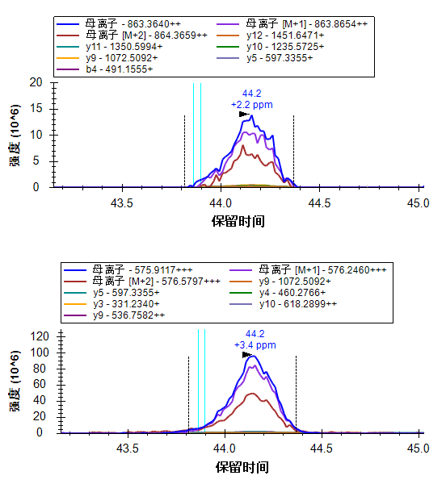
| 注：为清楚起见，对图例进行了还原，并且针对上图调整了此图的大小。 |
现在应选择第二个肽段的双电荷母离子，Skyline 窗口应如下所示：
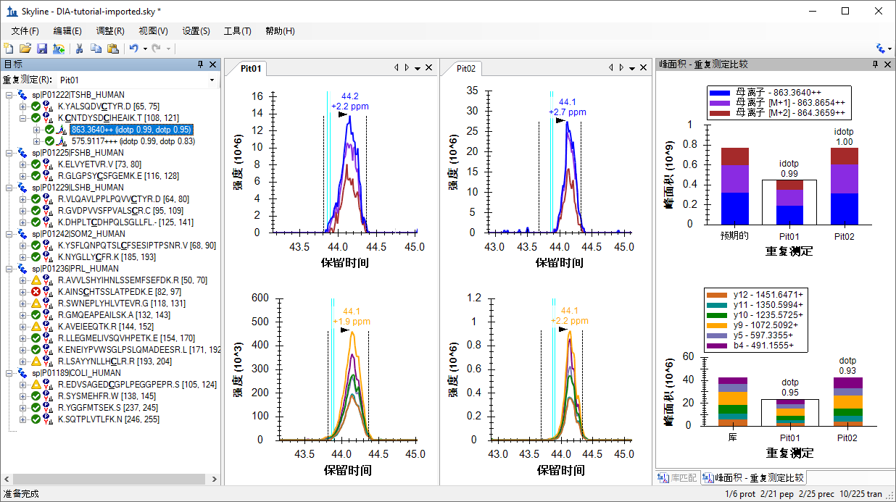
对于此母离子而言，您在最后一个肽段上引入的所有指标，即质量误差、同位素点积和点积，看起来更好。您可能会觉得应选择不同的积分边界，尤其是在“Pit02”中的峰上。您可以试一下，然后使用 Skyline 撤销/重做按钮证明它不会对峰面积产生太大影响。除非积分边界缺少大部分的峰，例如在第一个肽段中，否则通常最好接受这样的细微差异。
这是一个 7 倍强度的母离子。而且它看起来也很不错。但您可能会注意到 y5 色谱图上的干扰。要想更清楚地查看，请执行以下操作：
色谱图现在应显示如下：

|
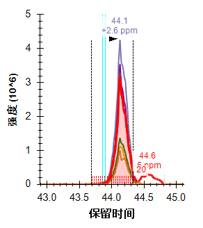 |
y5 色谱图突出显示红色，积分边界之间的点用 x 轴正上方的红色虚线突出显示，其计数（17 和 20）标注在右侧。右边还有第二高的峰，位于 Pit01 的 45分钟处和 Pit02 的 44.6 分钟处。这两个峰似乎对 44.1 分钟处的目标峰的贡献都不大，但在您打算进行大量测量的严格定量检测中，可能还是会删除这个离子对，以避免此峰与目标峰在强度可能更高的位置出现共洗脱的可能性。
继续看下一个肽段：
乍看之下，这个肽段在共洗脱、积分边界、质量误差和点积值方面看起来也很好。如果仔细观察，或许会注意到母离子色谱图右边缘似乎比片段色谱图衰减得更快。这确实又是信号衰落，原因和之前一样，稍后会介绍。
第 4 个肽段的吸引力看似远不如第 3 个肽段，但它似乎始终对 53.5 分钟附近的一个峰进行积分。
要查看提取的所有色谱图，请执行以下操作：
您会看到，Skyline 只提取了 DDA ID 时间附近 +/-5 分钟窗口内的色谱图——ID 发生在 53.5 分钟附近，因此 Skyline 提取了 48.5 到 58.5 分钟的色谱图。
由于母离子分离窗口非常宽（例如 10-25 质荷比），因此 DIA 中可能会受到很多干扰。然而，即便存在大量干扰，Skyline 自动峰选择操作通常也能选择正确的峰。在本例中，您会看到丰度更高的峰，但 Skyline 仍选择了最佳可用峰。您现在可以离开，并在执行以下操作后继续恢复峰缩放。
接下来的 5 个母离子看起来相当好，直到到达肽段 K.NYGLLYCFR.K [184, 192]。这个肽段的峰宽超过 1 分钟，并且不太呈高斯形状。Skyline 在这两个峰上放错了正确的积分边界，仅捕获 2/3 的峰。要纠正这一问题，请执行以下操作：
这个肽段图现在应如下所示：
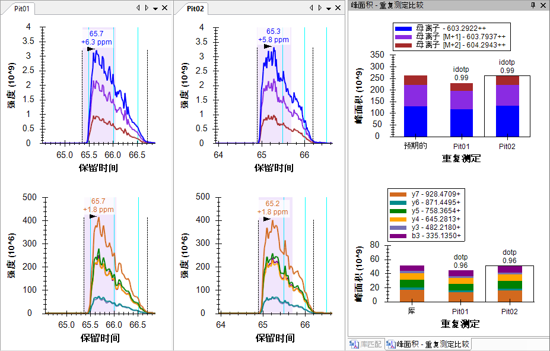
在青色 ID 线、0.99 同位素点积和 096 点积的组合之下，您应当对这个峰分配信心十足。
鉴于这些运行中的色谱图，您需要数次对列表中后面的肽段重复这种类型的修正。根据最近发表的几篇软件比较论文，Skyline 在峰积分方面与其它工具相比有着不错的表现。面对具有挑战性的峰形，其它工具也会有类似的问题。
接下来的这两个肽段（AVVLSHYIHNLSSEMFSEFDK 和 AINSCHTSSLATPEDK）在 DDA 的肽段 ID 时间附近缺乏任何有说服力的信号。您可以使用 shift-F11 来缩小，使用鼠标滚轮进行以鼠标为中心的缩放，使用 ctrl-单击并拖动以进行平移，但在其中任何一个肽段的色谱图中都不会发现任何内容。您可以删除它们或直接移至肽段 SWNEPLYHLVTEVR。
这个肽段有两个母离子，871.9467 处有双电荷，581.6335 处有三电荷。
这两个母离子都有良好的共洗脱碎片离子色谱图，并且无明显干扰。它们在 MS1 色谱图左侧也表现出明显干扰。

您可以查看峰面积图来了解强度大小（每秒的离子数），其中母离子 (MS1) 总数接近 100 万，子离子（串联质谱）总数为 20 到 25,000 或 40 到 50 倍的差异。前面看到过，MS1 信号使得串联质谱相形见绌，但它也更容易受到噪声和干扰的影响。
| 备注：只有下载了完整的教程数据集，才能使用下面的全扫描视图。否则 Skyline 将显示原始数据文件缺失的消息。 |
为了更好地了解从中提取这些色谱图的 MS1 扫描中发生的情况，请执行以下操作：
Skyline 将显示全扫描视图，其中显示从中提取母离子色谱图点的 MS1 扫描范围。您可以单击带有放大镜的按钮和视图右上角的加号 () 来查看整个 MS1 扫描。执行以下操作：
全扫描图现在应如下所示：

质心模式峰的强度显示为棒状。用于在色谱图上创建点的强度以色谱图颜色突出显示，提取范围显示为阴影区域。您可以看到未提取到阴影峰右侧的 M+3 和 M+4 峰。您所查看的产生干扰峰顶点的谱图在这个母离子积分峰的左边。您可以看到比目标肽段重 1 道尔顿的双电荷母离子的完整同位素分布。它的单同位素峰非常接近目标的 M+1。
在 70.56 分钟处，应看到第一个包含目标单同位素过滤范围内峰的 MS1 谱图，该谱图突出显示为蓝色。直到 70.67 分钟处，您才会看到第一个包含最强单同位素峰的 MS1 谱图。
要对子离子串联质谱扫描执行类似的分析：
在全扫描视图中应当看到类似这样的图。
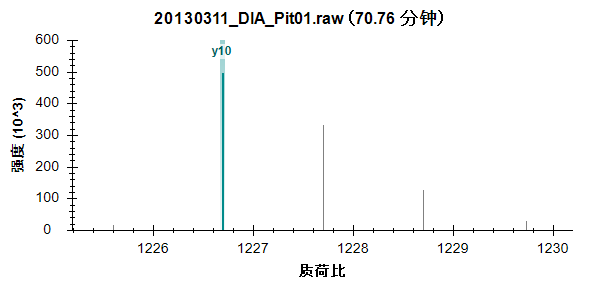
可以看到，对您刚刚在色谱图上单击的点做出贡献的串联质谱峰突出显示为浅绿色，并标注有 y10。从同位素峰相距 1 质荷比这一点，可以更加确信它们是由单电荷离子产生的。
您应当看到类似这样的谱图：

同样，可以看到对一系列峰中最高的峰进行了突出显示和注释，该系列峰中的后续峰相距 0.5 质荷比，表明是双电荷离子的同位素分布。您应当可以更加确信在子离子色谱图中提取的信号与您的目标相匹配。
在上面看到的 MS1 谱图中，虽然干扰离子和目标离子的中性质量相差 1 道尔顿，但其质荷比高度相似。不太相似的离子质荷比值仍足以接近到在质谱仪中产生单独一个未解析轮廓峰的程度。在本例中，单一峰最终的质心可能是某个质荷比值，甚至比您的目标质荷比值还大 20 ppm。这是您在本教程中所看到的信号衰落的最常见原因。
您可以执行以下操作，使用全扫描视图查看实际情况：
您会看到 M-1（单同位素母离子的左侧）处的峰随时间推移而增长。
它到 41.67 分钟处达到最高峰：

在 41.68 分钟处，可以看到所提取峰的质荷比左移：
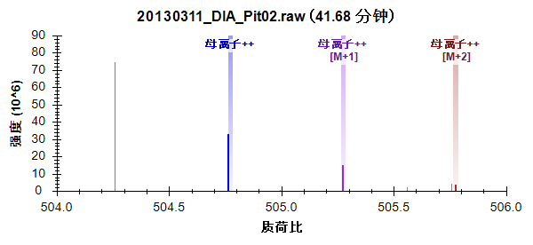
在 41.70 分钟处，它们已移出 +/- 20 ppm 的提取范围：
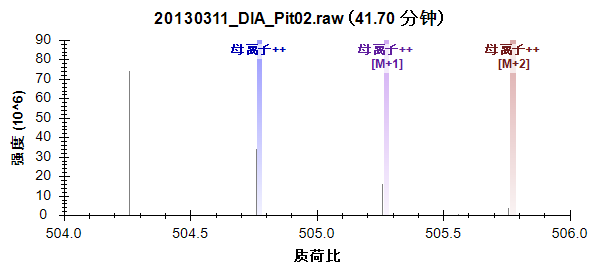
从 DIA 的质心串联质谱谱图中提取，尤其是在 Thermo Orbitrap 仪器上进行，已被证明在广泛的统计测试中更可靠，但在考虑数据时，这仍然是一个有用的概念。当您通常预期它会导致信号增加时，此设置中的干扰会降低总信号。
在本教程中，您定义了用于生成 DIA 仪器方法或本教程中所述简单数据分析的 DIA 采集方案。您运用 DDA 搜索结果建立了谱图库，根据库中测得的 RT 设置了保留时间限制，定义了一组基于目标蛋白质和 DDA 运行的匹配谱图进行测量的离子对，导入了 DIA 运行，并分析了获取的数据质量。和所有 Skyline 文档中一样，您最终可以生成目标肽段的峰面积和统计信息。本教程中还提到了其它几部用于进行更高级研究的教程（靶向方法编辑、现有定量实验、iRT 保留时间预测、高级峰选择模型、导入分析库以及 Panorama 色谱图库）。
通过这个工作流程，您应当能够分析 Skyline 中的任何 DIA 数据集，前提是它伴随 DIA 运行之前、之后或之中采集的 DDA 运行。这是开始 DIA 数据分析的一种简单方法。但是，强烈建议您继续学习 DIA/SWATH 数据分析教程。从中您将使用校准的 iRT 值建立谱图库，并使用这些归一化保留时间和 mProphet 统计模型进行色谱峰的评分和选择。您还将根据调整后的 p 值，使用 Skyline 中的群组比较来估计每个肽段或蛋白质条件之间的倍数变化。
1. Venable, J. D., Dong, M.-Q., Wohlschlegel, J., Dillin, A. & Yates, J. R. Automated approach for quantitative analysis of complex peptide mixtures from tandem mass spectra. Nat. Methods 1, 39–45 (2004).
2. Gillet, L. C. et al. Targeted data extraction of the MS/MS spectra generated by data-independent acquisition: a new concept for consistent and accurate proteome analysis. Mol. Cell. Proteomics MCP 11, O111.016717 (2012).
3. Egertson, J. D. et al. Multiplexed MS/MS for improved data-independent acquisition. Nat. Methods 10, 744–746 (2013).
4. Krokhin, O. V. et al. An improved model for prediction of retention times of tryptic peptides in ion pair reversed-phase HPLC: its application to protein peptide mapping by off-line HPLC-MALDI MS. Mol. Cell. Proteomics MCP 3, 908–919 (2004).
5. Escher, C. et al. Using iRT, a normalized retention time for more targeted measurement of peptides. Proteomics Accept. (2012).
6. Reiter, L. et al. mProphet: automated data processing and statistical validation for large-scale SRM experiments. Nat. Methods 8, 430–435 (2011).